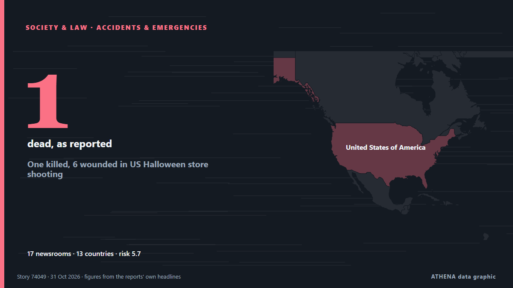

Accidents et urgences
| 18 oct. | 0 |
|---|---|
| 19 oct. | 0 |
| 20 oct. | 0 |
| 21 oct. | 0 |
| 22 oct. | 0 |
| 23 oct. | 1 |
| 24 oct. | 2 |
| 25 oct. | 1 |
| 26 oct. | 0 |
| 27 oct. | 3 |
| 28 oct. | 7 |
| 29 oct. | 7 |
| 30 oct. | 2 |
| 31 oct. | 1 |
Les titres sont affichés en anglais, tels que publiés.

One killed, 6 wounded in US Halloween store shooting
A shooting at a Halloween store in northern California killed one person and wounded six on Friday, police said, adding investigators had not yet identified who was responsible. de Vanguard
A helicopter with the EU force in Bosnia crashes, reportedly killing 3 and injuring 12
A Italian helicopter of the European Union peacekeeping force in Bosnia has crashed in the country’s north. de ABC News (International)
Spain’s transport minister refuses to resign over Toledo train crash as elections loom
Oscar Puente ruled out stepping down at a press conference at the Transport Ministry in Madrid on Friday. de The Olive Press
3 dead in rock spire collapse at tourist site in Turkiye's Cappadocia
A landslide triggered by heavy rainfall caused a rock spire to collapse in Turkiye’s Unesco World Heritage-listed Cappadocia region on Thursday, bringing the death toll to three, officials said. de Dawn
Spanish long jumper Julieta Gallego among victims of deadly train collision
Julieta Gallego, who competed for Madrid-based AD Sprint, among those killed in train crash in Spain. de Al Jazeera English
Spain working 'tirelessly' to identify train crash dead: PM
Relatives of the victims have endured an agonising wait for news as rescue crews sift through the wreckage of tangled metal and bodies are examined in morgues. de CNA (Channel NewsAsia)
High-speed train collision in Spain: 68 dead, more than 100 injured
MADRID: At least 10 people have died after a major collision involving two high-speed passenger trains in the central Spanish province of Toledo.The accident prompted the suspensi... de Oman Observer
One killed, five injured by Afghan firing near Angoor Adda
LOWER SOUTH WAZIRISTAN: In yet another violation of border protocols, Afghan security forces opened unprovoked fire on Pakistan Army border posts and residential areas in the Angoor Adda border… de Dawn
Grieving Spain demands answers for latest rail disaster
One of Europe’s deadliest rail disasters this century struck south of Madrid on Wednesday morning, killing 69 people and injuring dozens more. de Free Malaysia Today
Spain begins three days of mourning after train crash kills 69
The Portuguese Government has expressed its “deepest condolences” and “solidarity” to the Spanish authorities following a “tragic train accident” in the Toledo region that killed at least 30 people. de The Portugal News
Taraba massacre: Reps seek urgent help as death toll hits 60
He called for urgent security and humanitarian intervention, as death toll in Binnari community attack, Taraba reach 60. de Vanguard
Xi extends condolences over deadly train collision in Spain
Associated Press Of Pakistan PM expresses grief over devastating train collision in Spain ISLAMABAD, Oct 28 (APP): Prime Minister Muhammad Shehbaz Sharif, Wednesday, expressed his profound grief over… de APP (Associated Press of Pakistan)
US fires senior army general in latest ouster: reports
The United States has fired a top military planner, US media reported, in a surprise shake-up as President Donald Trump appears to be preparing to resume large-scale strikes against Iran. de Al-Monitor
Three Italians unaccounted for after Toledo rail disaster
(ANSA) - ROME, 29 OTT - Three Italian nationals are unaccounted for following Wednesday's collision between two trains on a high-speed rail line near Toledo in Spain in which 68 people died, the… de ANSA English
Spain’s deadly train crash adds new complication to Sanchez’s reelection campaign
The crash that killed 68 people in Toledo province has fuelled criticism of railway underinvestment under Pedro Sanchez’s government. de Free Malaysia Today
Emergency declared at US nuclear site after laboratory fire in South Carolina
Radiological surveys find no detectable levels of contamination. de Anadolu Agency (English)
Train crash kills at least 68 in Spain
Spain’s transportation minister said it was ‘inexplicable’ how the disaster happened when a high-speed train rear-ended another train that had stopped on the same track. de NBC News (World)
Survivors of clergy sexual abuse reach $800m. settlement with New York Archdiocese
In addition to the $800 million settlement, the archdiocese agreed to release documents pertaining to sexual offenders in the Church. de The Jerusalem Post
Canadian volunteer killed by Russian drone while rescuing animals in Donetsk Oblast
Jesse Adams, founder of the Canadian organization RainCoast Dog Rescue Society, was killed by a Russian FPV drone while evacuating animals from front-line Kramatorsk. de Kyiv Independent